Cases first, principle second
The gallery
On this page, you’ll find real, published visualizations: some excellent, some bad, and a few that are both beautiful and dishonest. In every lecture, we discuss at least two of them. Here, you can explore the different examples and learn how published visualizations can be recreated with ggplot. Note: The gallery is a work in progress, and we will be adding more cases. It is our slightly “ambitious” attempt to show that everything can be done with ggplot.
GOOD AND BAD, NOT PRETTY AND UGLY
The question is always whether the chart’s claim survives scrutiny, and that does not line up with how it looks. The two most instructive cases are the ugly-but-honest chart, which reports exactly what it found in a badly typeset figure, and the beautiful-and-deceptive one, where good design is doing work the data does not support.
THE CASES
The classicsMade before anyone called it data visualization.
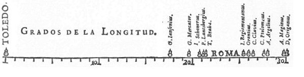
Distribution & uncertaintyVan Langren’s longitudesMichael Florent van Langren, 1644Twelve estimates of one distance on one line, usually called the first graph of statistical data. The spread shows at a glance; the bias cannot, until you draw the answer.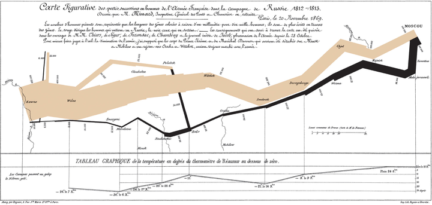
The whole storyMinard’s march on MoscowCharles Joseph Minard, 1869Six variables and no chart type. The case for composing a figure rather than choosing one.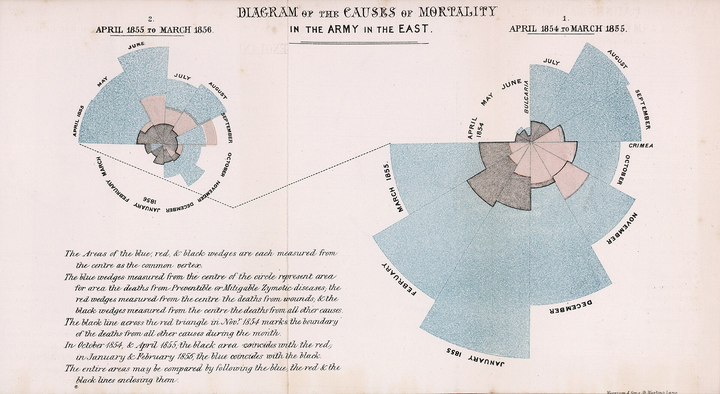
The whole storyNightingale’s rose diagramFlorence Nightingale, 1858Polar area, and a real intervention: the graphic changed government policy. Also a lesson in what area does to a comparison.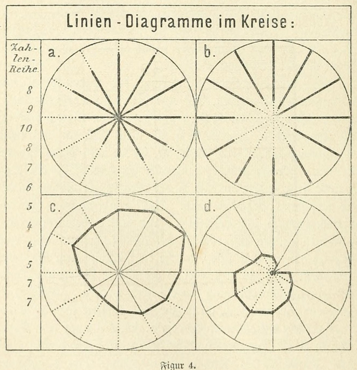
Comparison & rankingMayr’s radar chartGeorg Mayr, 1877The first radar chart came with a rule: only for a real cycle, where the last spoke belongs next to the first. Break it, and the order of the spokes decides which profile looks bigger.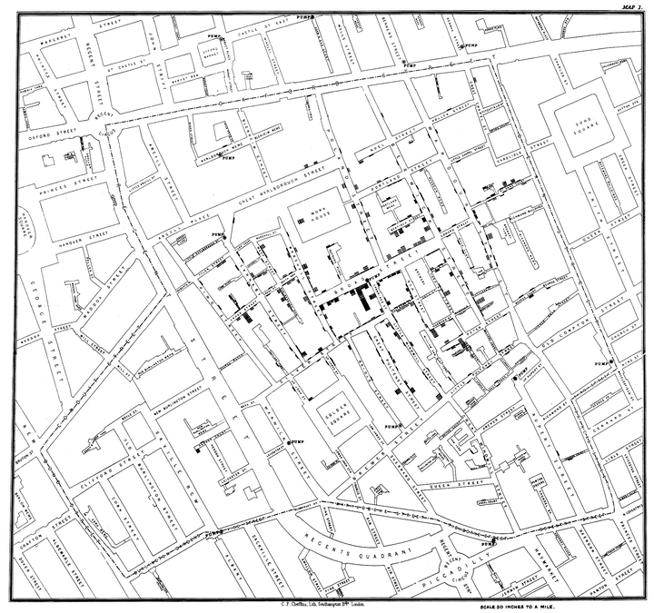
Relationships & structureSnow’s cholera mapJohn Snow, 1855Structure in space, before the vocabulary existed. Published after the pump handle came off: made to argue a conclusion he already held.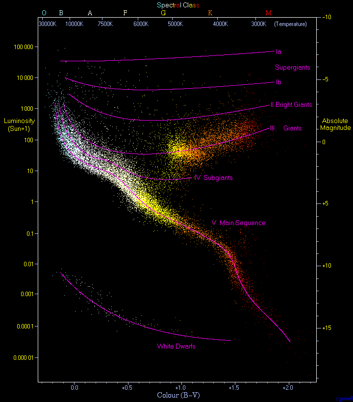
Relationships & structureThe Hertzsprung–Russell diagramEjnar Hertzsprung 1911, Henry Norris Russell 1913A scatterplot that encodes an entire theory, and a reminder that a basic form can carry a great deal.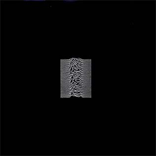
Distribution & uncertaintyUnknown PleasuresPeter Saville 1979, after Harold Craft 1970A pulsar plot from a radio astronomy thesis, on an album cover. Ridgelines, and a hook that lands in about four seconds.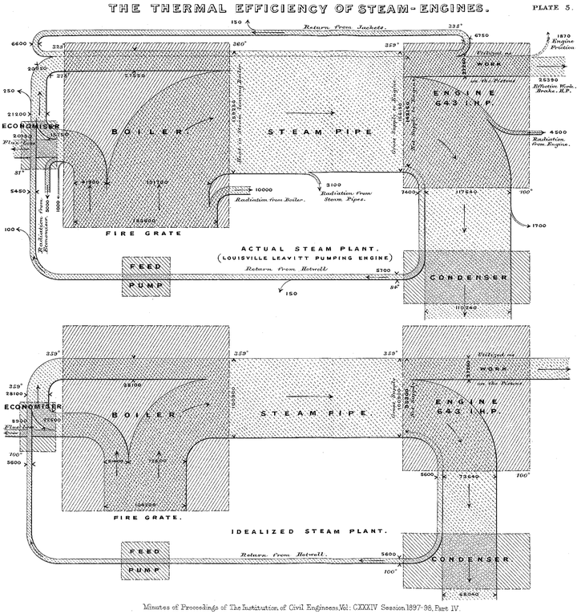
Relationships & structureSankey and alluvial flowsafter Sankey, 1898Coalitions, energy budgets, funnels. Part to whole, over time, without pretending the parts are independent.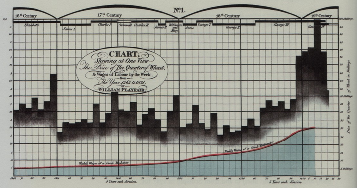
Change over timePlayfair’s wheat and wagesWilliam Playfair, 1821The inventor of the line chart puts a price and a wage on one time axis, and the gap between them means nothing. Two pages later he draws the ratio, and the argument appears.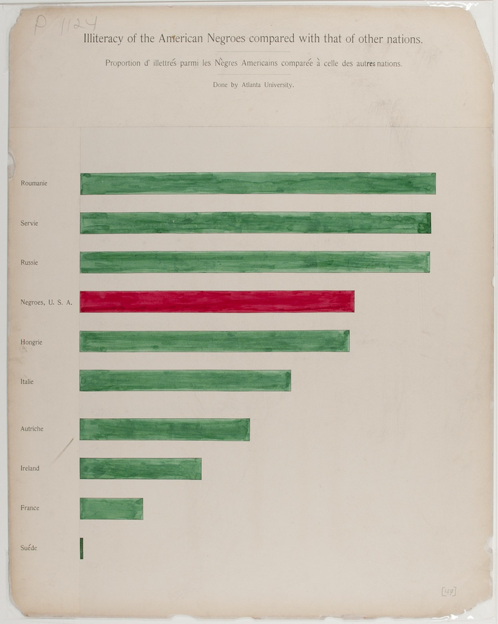
Comparison & rankingDu Bois’s data portraitsW. E. B. Du Bois and Atlanta University, 1900Made to answer the racist science of 1900 with evidence: one generation after slavery, Black Americans’ illiteracy ranked among the nations of Europe. The comparison set is the argument, and it was a deliberate one.ModernNewsrooms, agencies and research groups, mostly this century.
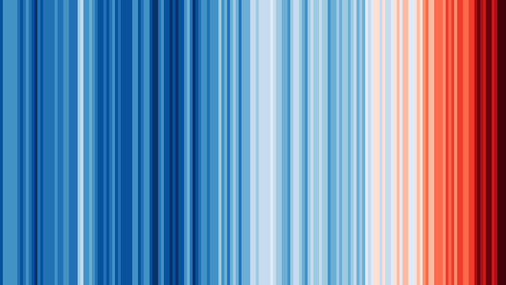
Change over timeWarming stripesEd Hawkins, 2018A century and a half of temperature with no axes at all. The cleanest demonstration that a chart is a claim and not a table.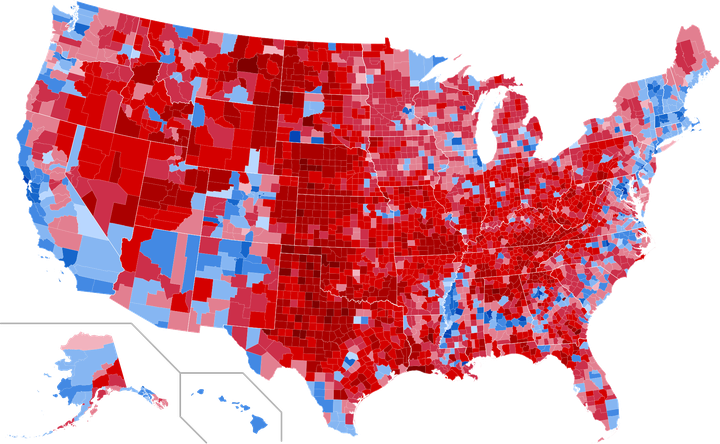
Relationships & structureCartograms and hexbin mapsMagog the Ogre & Drlovedrake, 2020Structure in space, normalised. Land does not vote, and a choropleth of counts quietly says it does.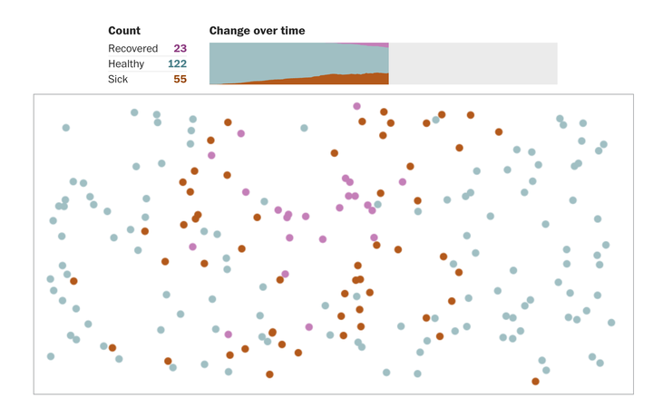
The whole storyWhy outbreaks spread exponentiallyHarry Stevens, Washington Post, 2020A simulation you watch rather than a chart you read, and the most read story in the paper’s history. Argument by letting the reader run it.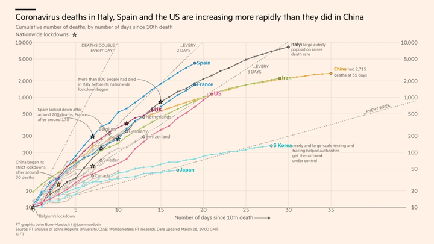
Change over timePandemic trajectories on a log scaleJohn Burn-Murdoch, Financial Times, 2020Aligned by days since the tenth death rather than by calendar date, on a log axis. Both choices are arguable and both were argued about.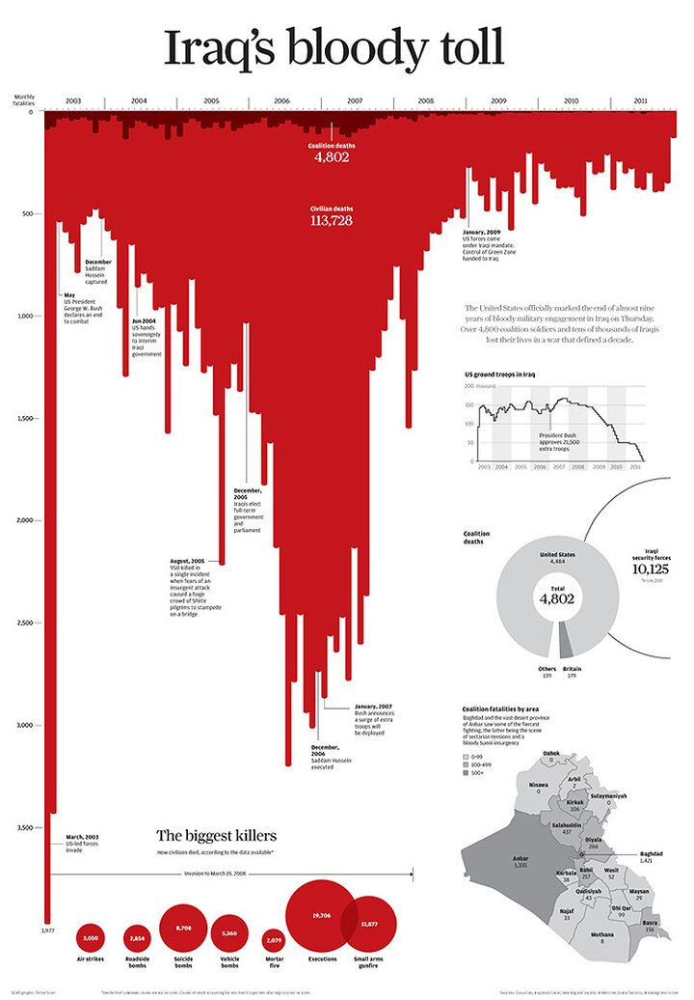
Change over timeIraq’s bloody tollSimon Scarr, South China Morning Post, 2011An inverted axis so the bars hang down like blood. The encoding is unconventional, the reading is unambiguous, and it works.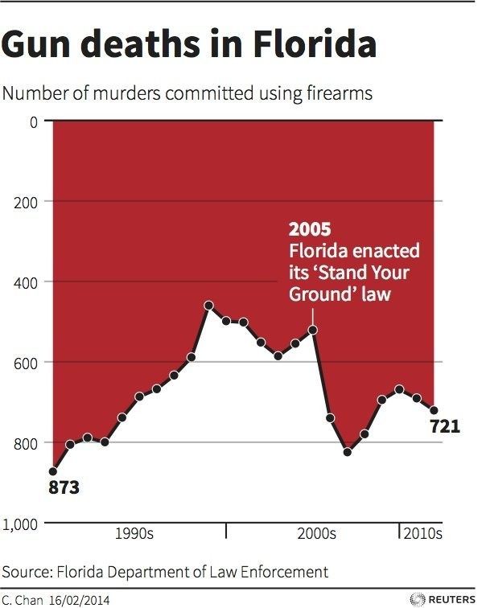
Change over timeGun deaths in FloridaChristine Chan, Reuters, 2014The same inverted axis as Scarr, on a rise that now reads as a fall. The article text said deaths went up. Pair it with the one above.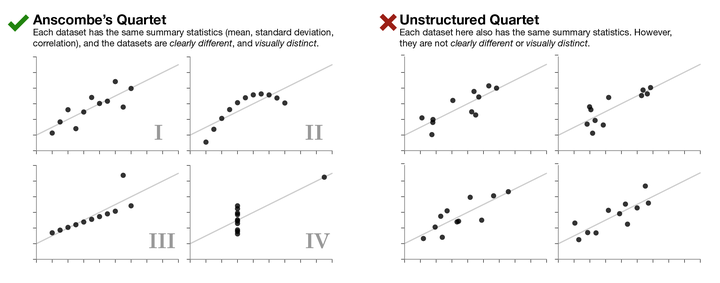
Distribution & uncertaintyThe Datasaurus dozenMatejka & Fitzmaurice, Autodesk, 2017Thirteen datasets with identical means, variances and correlations, and nothing else in common. Anscombe’s point, made unignorable.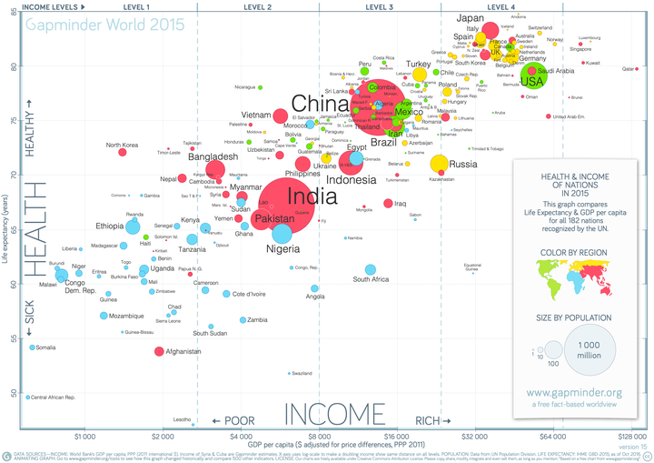
Relationships & structureIncome and life expectancyHans Rosling, Gapminder, from 2006Four variables in a moving scatterplot, and a performance built around it. The case for animation, and the argument against it.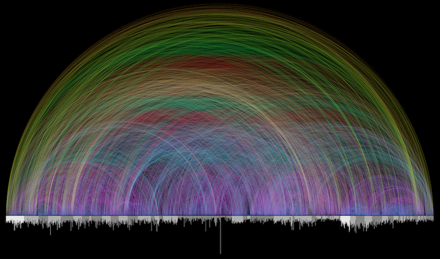
Relationships & structureThe Bible’s cross-referencesChris Harrison & Christoph Römhild, 2007Sixty-three thousand arcs, made to be more beautiful than functional. An arc diagram that works because the chapters have an order, and a picture that answers almost nothing you could ask of it.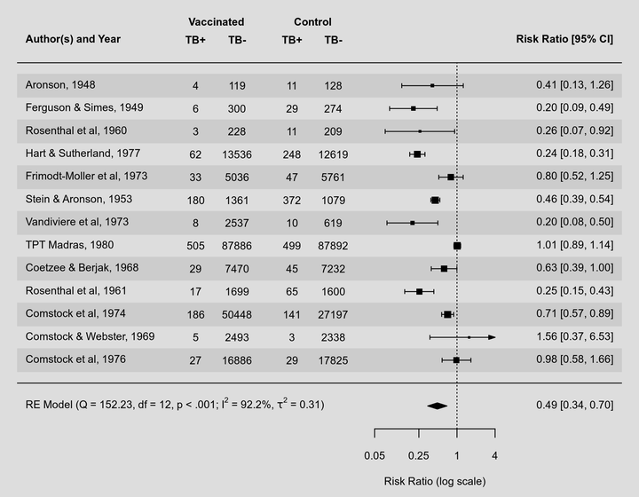
Distribution & uncertaintyThe forest plotWolfgang Viechtbauer, metafor, from 2010Thirteen vaccine trials and one summary diamond. The standard figure of meta-analysis, and a lesson in what a pooled interval does not tell you.From the social sciencesFigures that carry an argument about people, and about method.
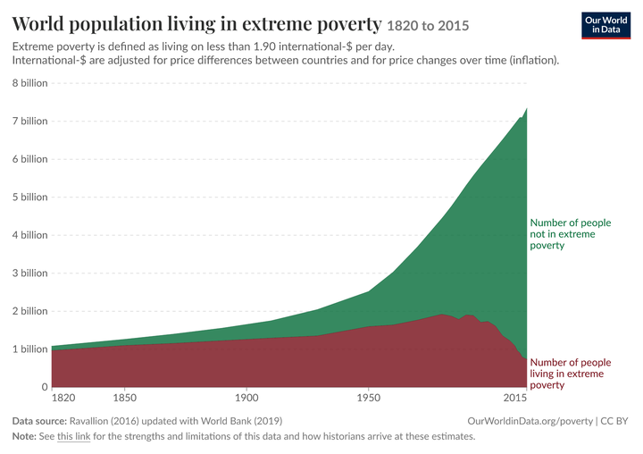
The whole storyTwo centuries of extreme povertyOur World in Data, after Ravallion, 2019The count of the world’s poorest and the population they belong to, in one picture over two hundred years. Equally confident about the ten reconstructed estimates on its left as about the surveys on its right.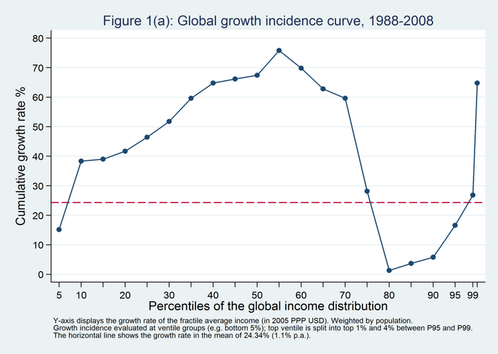
Distribution & uncertaintyThe elephant curveLakner & Milanovic, World Bank, 2013Twenty years of income growth across the world’s distribution, read as who won and who lost from globalisation. It compares positions, not people, and the paper says so.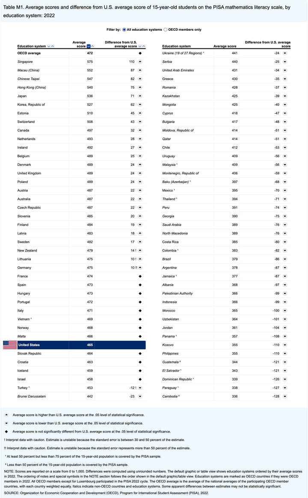
Comparison & rankingThe PISA league tableNational Center for Education Statistics, 2023Eighty-one education systems in order, with significance marked against one country only. A printed rank that the data supports only as a range.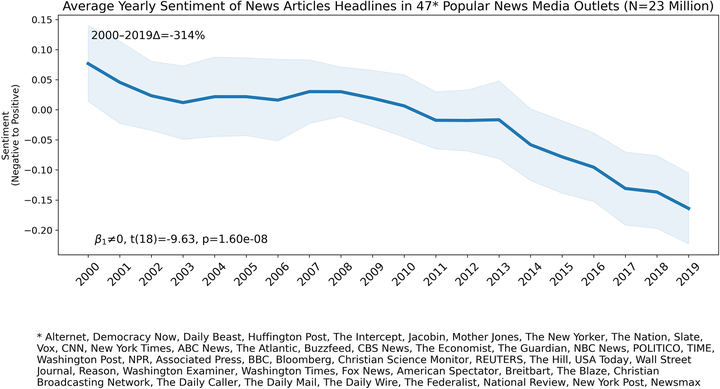
Change over timeHeadlines turning negativeRozado, Hughes & Halberstadt, PLOS ONE, 2022Machine-coded sentiment of 23 million headlines, by year. A real trend, a percentage change on a scale with no zero, and an average over a growing room.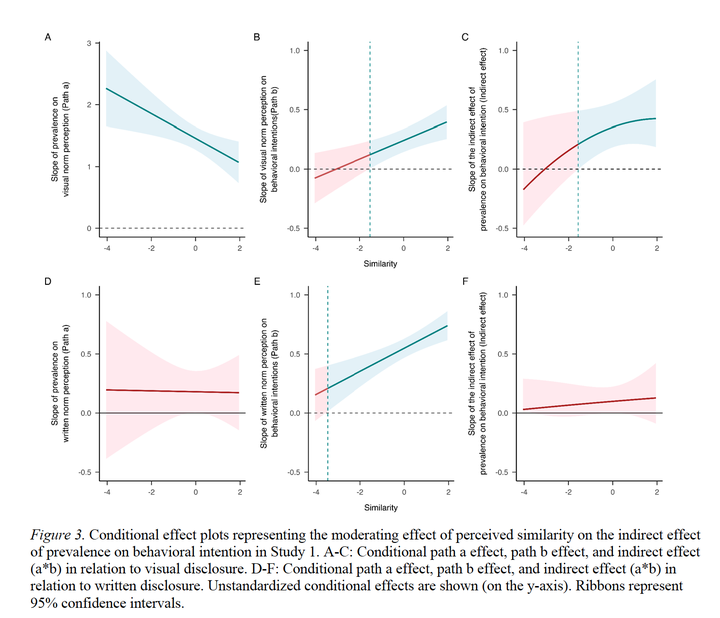
Distribution & uncertaintyConditional effectsMasur & Parry, Technology, Mind, and Behavior, 2026A moderation from our own data, drawn both ways: pick-a-point and the Johnson–Neyman curve. One tells you how big, the other where it holds.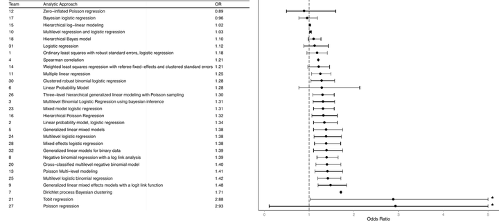
Distribution & uncertaintyMany analysts, one datasetSilberzahn et al., 2018Twenty nine teams, one dataset, one question, and answers running from no effect to a large one. This course’s whole thesis, run as an experiment.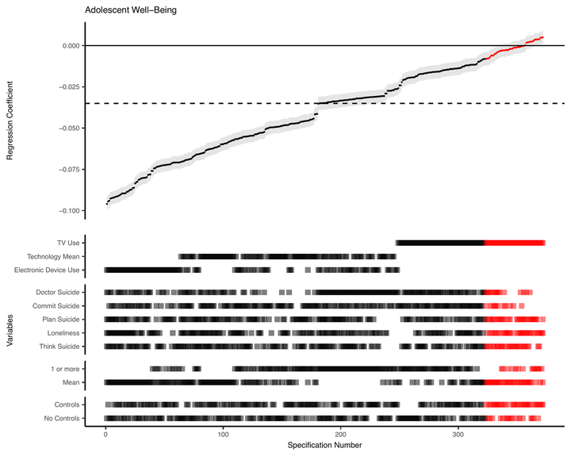
Distribution & uncertaintyThe specification curveOrben & Przybylski, Nature Human Behaviour, 2019A specification curve over thousands of defensible analyses of the same survey data. The effect is there, and it is the size of eating potatoes.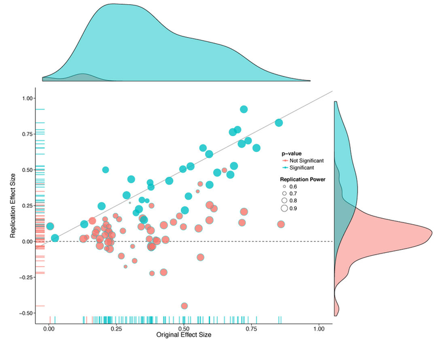
Relationships & structureOriginal against replicationOpen Science Collaboration, Science, 2015One hundred effect sizes, measured twice. A scatterplot where the interesting thing is how far the points sit from the diagonal.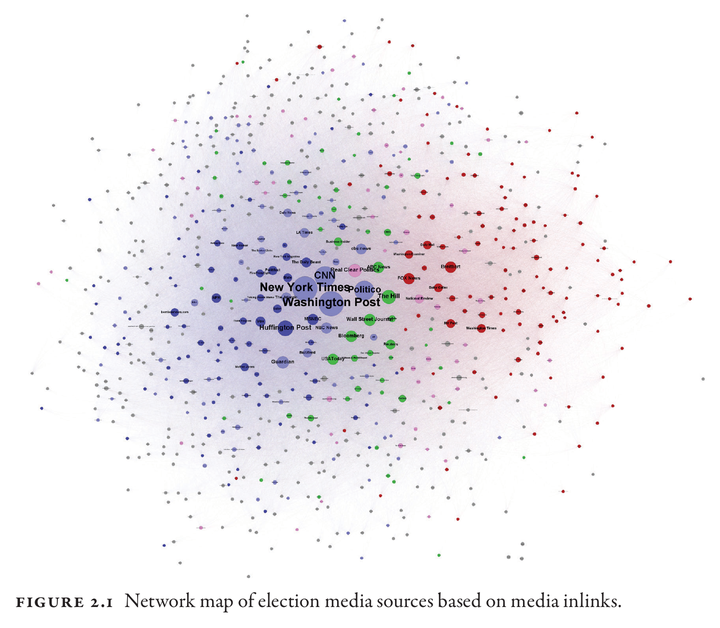
Relationships & structureThe asymmetric media ecosystemBenkler, Faris & Roberts, 2018Media Cloud link maps behind Network Propaganda. A network that is legible rather than a hairball, and what had to be decided to get there.Nothing matches that.